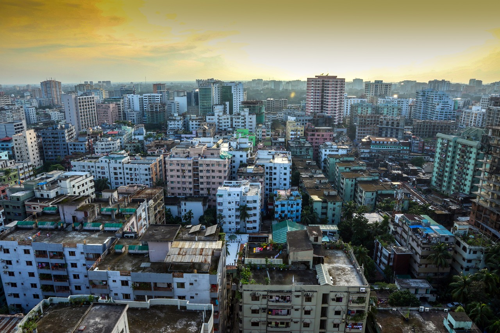
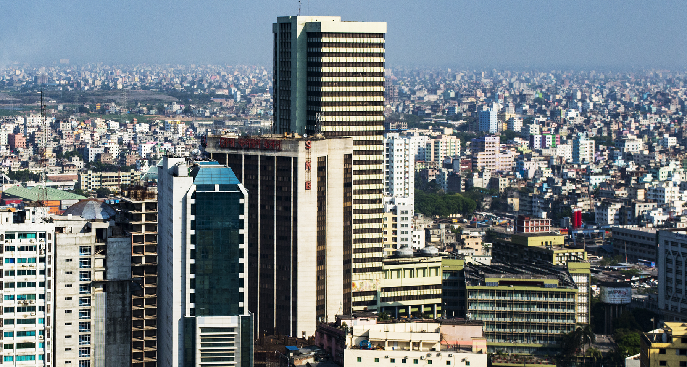
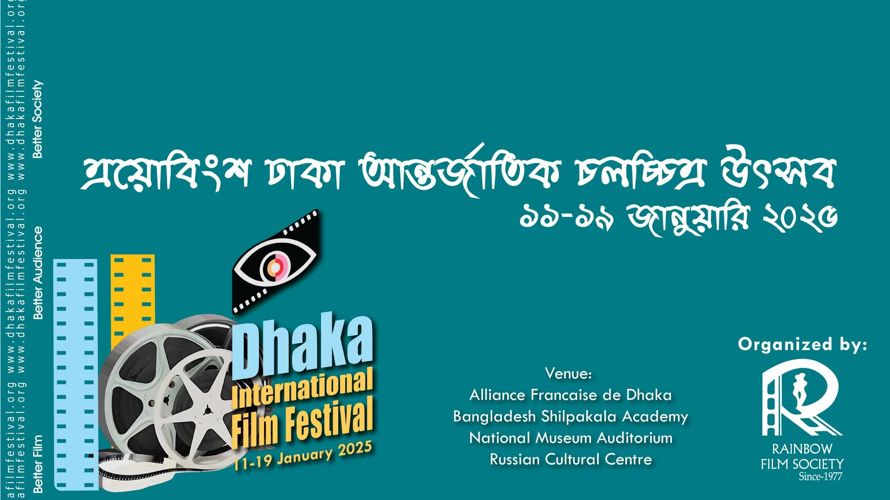
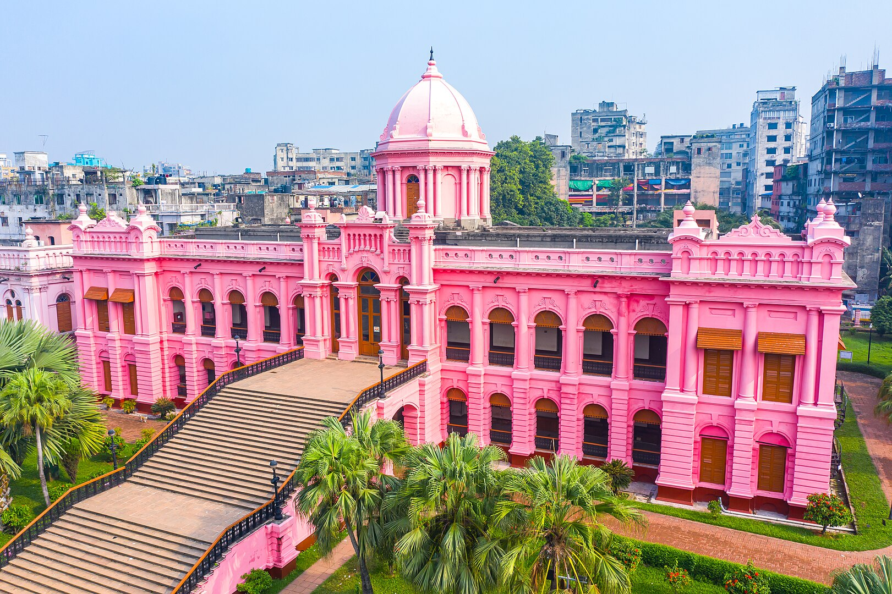
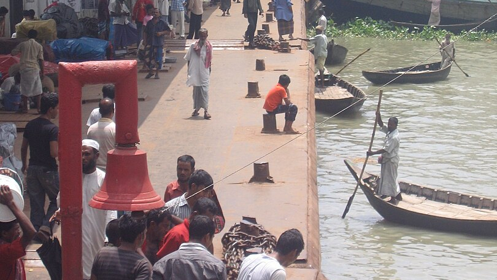
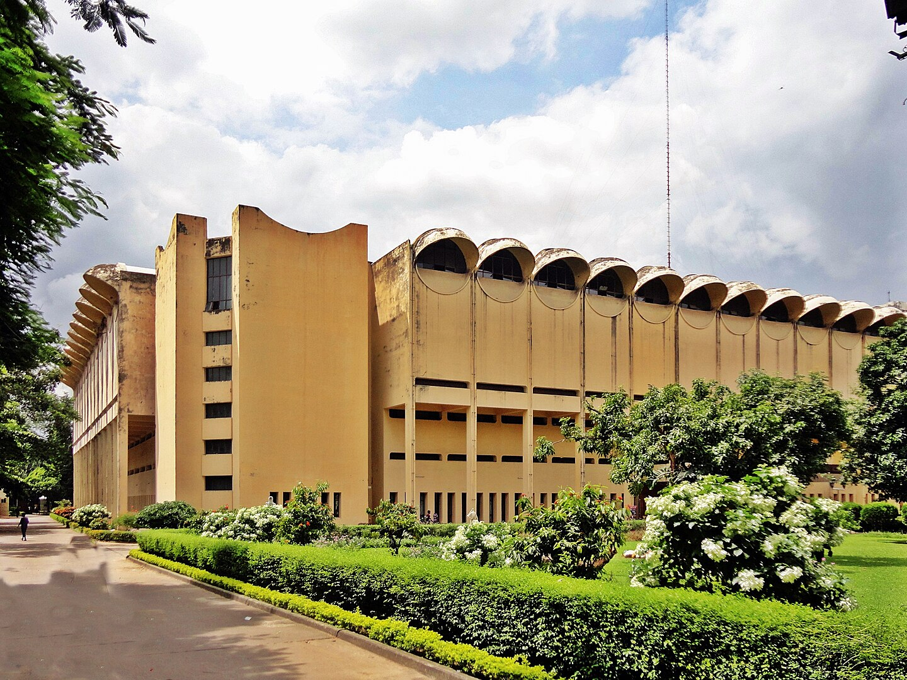

Dhaka - gęsto zaludniona stolica Bangladeszu
Dhaka to stolica i największe miasto Bangladeszu, położone w południowo-wschodniej Azji. Jest to jedno z najbardziej zaludnionych miast na świecie, w którym mieszka ponad 20 milionów ludzi w obszarze metropolitalnym. Miasto pełni kluczową rolę w gospodarce, kulturze i polityce kraju, stanowiąc jego serce.
Historia
Dhaka ma długą i bogatą historię, której korzenie sięgają już czasów starożytnych. Pierwsze wzmianki o mieście pojawiły się w 1000 roku, kiedy było znane jako wioska handlowa. Miasto rozwinęło się jako ważny ośrodek w średniowieczu, kiedy stało się częścią Imperium Bengal. W XVII wieku, kiedy Bengal był częścią Imperium Mogołów, Dhaka stało się jednym z głównych ośrodków handlowych i administracyjnych, znanym z produkcji tkanin (zwłaszcza słynnych tkanin muslinowych).
W XVIII wieku, po upadku Imperium Mogołów, Dhaka stało się częścią Brytyjskiej Indii, co miało duży wpływ na jego rozwój urbanistyczny. Po uzyskaniu niepodległości przez Bangladesz w 1971 roku, Dhaka stało się stolicą nowo powstałego państwa.
Kultura
Dhaka to miasto, które łączy tradycję z nowoczesnością. Jest to centrum kultury i sztuki Bangladeszu, z licznymi muzeami, galeriami i teatrami. W Dhace odbywają się ważne wydarzenia kulturalne, takie jak Festiwal Filmowy Dhaka czy Międzynarodowy Festiwal Literatury.
 Miasto jest również znane z tętniącego życiem rynku ulicznego, w którym można spotkać sprzedawców oferujących wszystko, od jedzenia po ubrania i elektronikę. Życie w Dhace jest intensywne, a ulice pełne są ludzi, rikszy, samochodów, a także tradycyjnych rynków. Mimo iż miasto boryka się z wieloma problemami, takimi jak przeludnienie, zanieczyszczenie powietrza i infrastruktura, Dhaka jest także dynamicznie rozwijającym się ośrodkiem.
Atrakcje
 Laalbagh Fort to jeden z najważniejszych zabytków w Dhace, zbudowany w XVII wieku przez księcia Muhammad Azam, syna cesarza Mogołów Aurangzeba. Fort nie został nigdy ukończony, ale mimo tego jest jednym z najlepszych przykładów architektury mogolskiej w Bangladeszu. W kompleksie znajdują się piękne ogrody, meczet, a także mauzoleum. Laalbagh Fort jest miejscem o dużym znaczeniu historycznym, oferującym turystom możliwość zgłębienia historii Bangladeszu i Mogołów.
Laalbagh Fort to jeden z najważniejszych zabytków w Dhace, zbudowany w XVII wieku przez księcia Muhammad Azam, syna cesarza Mogołów Aurangzeba. Fort nie został nigdy ukończony, ale mimo tego jest jednym z najlepszych przykładów architektury mogolskiej w Bangladeszu. W kompleksie znajdują się piękne ogrody, meczet, a także mauzoleum. Laalbagh Fort jest miejscem o dużym znaczeniu historycznym, oferującym turystom możliwość zgłębienia historii Bangladeszu i Mogołów.
Ahsan Manzil, znany również jako "Różowy Pałac" ze względu na charakterystyczny kolor swojej elewacji, był niegdyś rezydencją bogatych kupców. Pałac zbudowany w XIX wieku w stylu neoklasycznym jest jednym z najbardziej rozpoznawalnych budynków w Dhace. Obecnie mieści się tu muzeum, które prezentuje bogatą historię i kulturę Bangladeszu, w tym eksponaty związane z okresem kolonialnym, jak i z czasów niepodległości. Warto zwrócić uwagę na piękne wnętrza pałacu i jego wyjątkową architekturę.
Sadarghat to jeden z największych portów rzecznych w Bangladeszu, a także jedno z najbardziej tętniących życiem miejsc w Dhace. Port jest centralnym punktem transportu wodnego w kraju, gdzie codziennie przepływa setki statków i łodzi. To fascynujące miejsce, pełne hałasu, ruchu i lokalnego życia. W Sadarghat można podziwiać tradycyjne łodzie i statki oraz poczuć pulsujący rytm miasta. Dla turystów to doskonała okazja, by zobaczyć życie codzienne mieszkańców Dhaki, szczególnie tych, którzy korzystają z transportu wodnego.
Bangladesh National Museum to jedno z najważniejszych muzeów w kraju, które oferuje bogatą kolekcję eksponatów z zakresu archeologii, sztuki, etnografii, historii naturalnej i kultury Bangladeszu. Muzeum ma kilka galerii, które przedstawiają historię regionu, w tym dzieje z czasów starożytnych, średniowiecznych oraz nowoczesnych. Zbiory muzeum obejmują m.in. rzeźby, malarstwo, a także artefakty związane z niepodległością Bangladeszu i walką o wolność. To świetne miejsce dla tych, którzy chcą głębiej poznać historię i kulturę Bangladeszu.
Problemy Dhaki
Dhaka stoi przed wieloma wyzwaniami, w tym:
- Przeludnienie – Dhaka jest jednym z najbardziej zatłoczonych miast na świecie, co wiąże się z wieloma problemami, takimi jak brak odpowiedniej infrastruktury, zanieczyszczenie i problemy zdrowotne.
- Zanieczyszczenie powietrza – z powodu licznych pojazdów, przemysłu i niewłaściwego zarządzania odpadami, jakość powietrza w Dhace jest często bardzo zła, co ma negatywny wpływ na zdrowie mieszkańców.
- Powodzie i zmiany klimatyczne – miasto jest szczególnie narażone na skutki zmian klimatycznych, takie jak powodzie, które stają się coraz bardziej powszechne z powodu wzrostu poziomu mórz i rzek.
- Ubóstwo – choć Dhaka jest jednym z najbogatszych miast Bangladeszu, wciąż zmaga się z problemem biedy, szczególnie w nieformalnych dzielnicach.